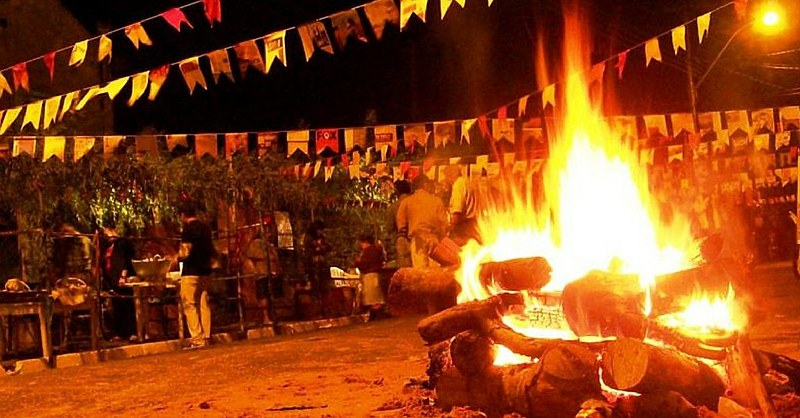

O Dia de São João é uma das comemorações da Festa Junina. São João Batista, na tradição cristã, anunciou a “boa-nova” (boa notícia) da vinda do Cristo, filho de Deus, salvador da humanidade, que “renovaria todas as coisas”. Foi ele também que batizou Cristo no rio Jordão.
Este site foi desenvolvido Com Intuito de representar o conhecimento técnico adquirido durante o curso de Desenvolvimento de Sistemas.

Este Site foi desenvolvido pelos alunos: Samuel Silva Valencia & João Victor Batista da turma de EMIDES03 do Senai Sergipe.